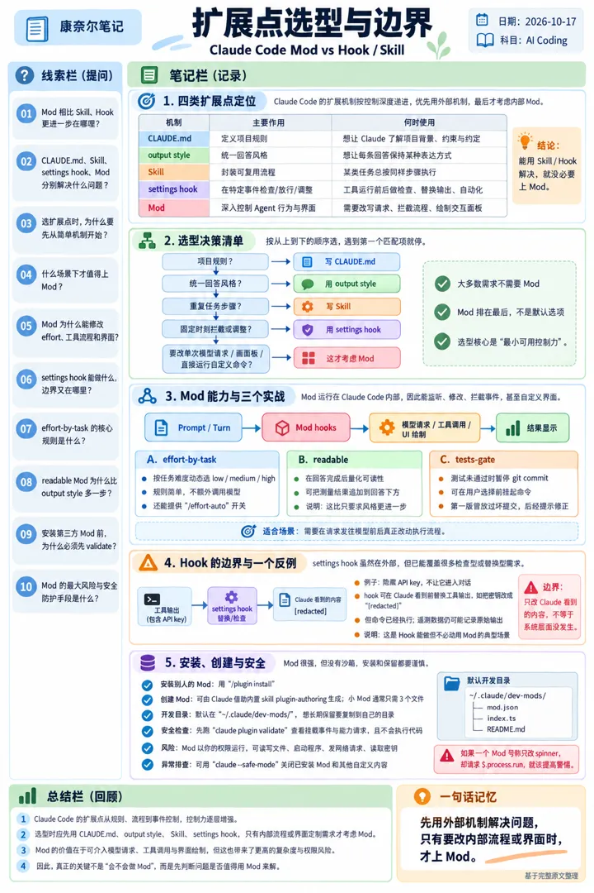
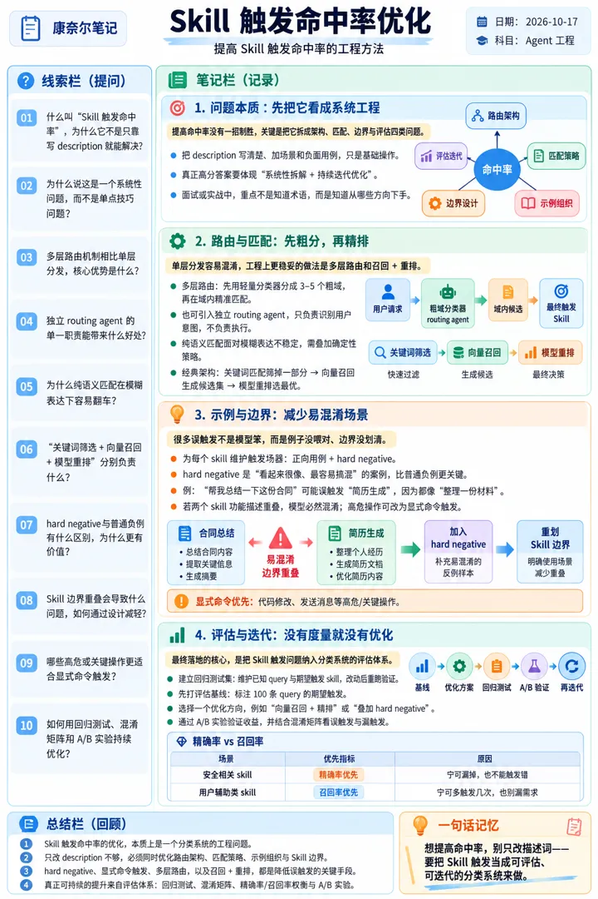
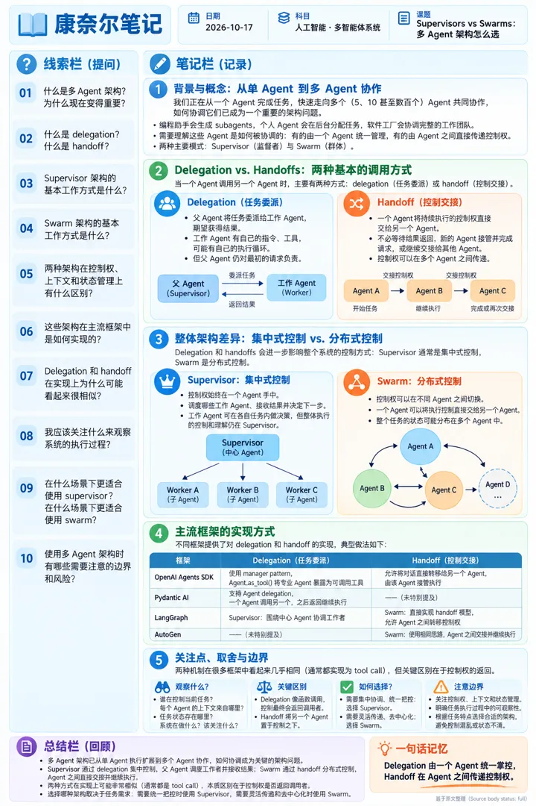
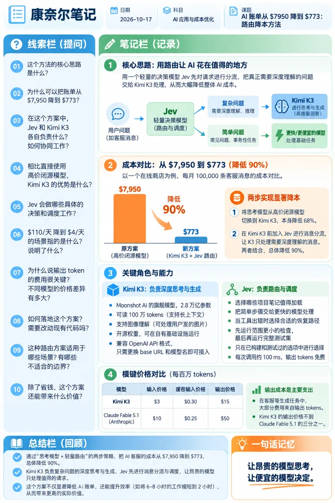
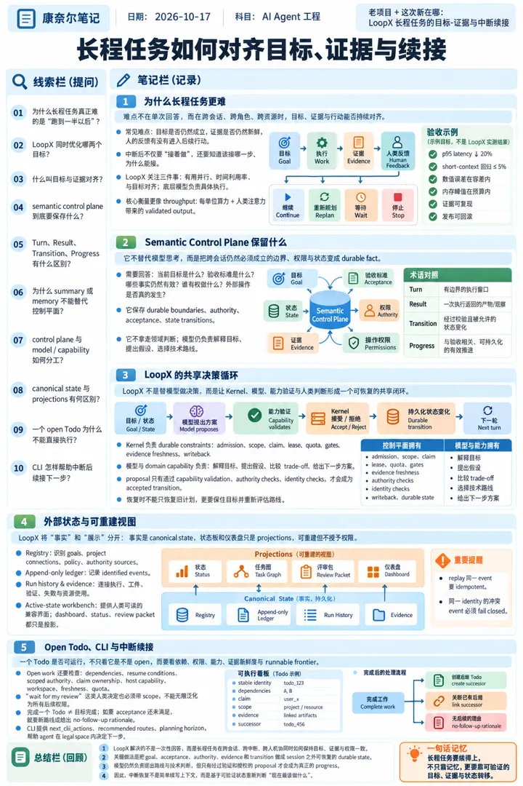

6 张技术海报
点海报看原图；每张右侧是 X 原帖信息（时间为美东 ET）。

#1 · X 原帖信息
Claude Code Mod vs Hook/Skill：扩展点怎么选
Vince 聊开发 @vincemask
发帖时间：2026-10-16 20:46 ET
原帖：https://x.com/vincemask/status/2111257446710984895
发帖时间：2026-10-16 20:46 ET
原帖：https://x.com/vincemask/status/2111257446710984895
Claude Code 新增 Mod，比 Skill 和 Hook 更进一步。 Claude Code 2.1.287，正式引入 Mod Mod 可以深入 Claude Code 内部，监听、修改或拦截事件，还能自定义交互界面。 几个典型场景： 1、自动调整思考力度：根据任务复杂度动态设置 effort。 2、评估回答质量：为 Claude 的每次回复计算可读性评分。 3、控制 Git 提交：测试未通过时暂停 commit。 那么，Mod、Skill 和 Hook 怎么选？ CLAUDE.md：定义项目规则。 Skill：封装可复用的工作流程。 Hook：在特定事件触发检查或自动化操作。 Mod：深入控制 Agent 行为，扩展 Claude Code 界面。 能用 Skill、Hook 解决的，就没必要上 Mod。 当你需要控制内部执行流程或定制交互界面时，再考虑 Mod。 Claude Code 创建者 Boris Cherny 评价： “Mods are absolutely insane.” ---

#2 · X 原帖信息
提高 Skill 触发命中率的工程方法
卡夫卡 @kafkaup
发帖时间：2026-10-16 01:24 ET
原帖：https://x.com/kafkaup/status/2110964963284033978
发帖时间：2026-10-16 01:24 ET
原帖：https://x.com/kafkaup/status/2110964963284033978
如何提高 skill 的触发命中率? 我们通常可能会回答：把 description 写清楚，加一些场景描写和负面用例，或者用 agent.md 和 skill tree 做边界划分。这些都属于基础操作，做了不会出错，但也不能帮你拿到高分。 这个问题没有一招制胜的解法。面试官想听的不是你知道“写 description 要具体”这种浅显道理，而是你能意识到这是一个系统性问题，知道从哪些方向去拆解，以及怎么做持续的迭代和优化。 可以回答的方向： 1. 路由架构： 既然单层分发容易混淆，就可以做多层路由机制。先用一个轻量的分类器分出 3 到 5 个粗域，再在每个域内做精准匹配；或者用一个独立的 routing agent，它只负责识别用户意图而不负责执行，单一职责下准确率会更高。 2. 匹配策略： 纯靠语义匹配，遇到模糊表达很容易翻车。可以先叠加关键词匹配快速筛掉一部分，绕过模型的不确定性；接着用向量召回生成候选集，最后让模型做重排。这就是经典的“召回 + 重排”架构。 3. 组织示例： 面试官可能会追问：你提到了加负面用例，具体该怎么加？ 这时可以说，我们会为每个 skill 维护一组触发场景，包括正向用例和 hard negative。Hard negative 不同于完全无关的普通负例，它看起来非常相似，是模型极易搞混的案例。比如用户说“帮我总结一下这份合同”，模型可能会…

#3 · X 原帖信息
Supervisors vs Swarms：多 Agent 架构怎么选
Josh Rosen @JoshARosen
发帖时间：2026-10-16 11:02 ET
原帖：https://x.com/JoshARosen/status/2111110576369737745
发帖时间：2026-10-16 11:02 ET
原帖：https://x.com/JoshARosen/status/2111110576369737745
# Supervisors vs. Swarms: Understanding the Architectural Differences Between subagents, dots, and software factories, we’re quickly going from one agent doing a job to five, ten, or even hundreds of agents working together. Coordinating all of them is becoming an increasingly important architectural problem. Multi-agent architectures have been around for a while, but most of us had to go out of our way to build one. That’s no longer the case. Coding assistants are spawning subagents, personal agents are delegating work in the background, and software factories are coordinating entire teams o…
#4 · X 原帖信息
把 Agent 会话沉淀成私有 evals
Ibragim @ibragim_bad
发帖时间：2026-10-16 10:30 ET
原帖：https://x.com/ibragim_bad/status/2111102467924496721
原文链接：https://github.com/ibragim-bad/evals-from-sessions
发帖时间：2026-10-16 10:30 ET
原帖：https://x.com/ibragim_bad/status/2111102467924496721
原文链接：https://github.com/ibragim-bad/evals-from-sessions
I had 1,270 agent sessions sitting in ~/.claude, ~/.codex and ~/.pi that’s an eval set: my corrections to the agent are the test cases turned it into the my-mini-benchmark. now I test any model, harness or plugin on my own tasks guide + the skill 👇 https://x.com/i/article/2110460904642949123 # Turn your agent sessions into evals. Mine found a 2× cheaper setup Every time I choose a coding agent, I’m guessing a little. Do I need the expensive model? Does more reasoning help? Is my usual setup worth what it costs? So I turned my past coding sessions into 10 tasks with automated checks and te…

#5 · X 原帖信息
AI 账单从 $7950 降到 $773：路由降本方法
Annatar.md @AnnatarXBT
发帖时间：2026-10-16 04:30 ET
原帖：https://x.com/AnnatarXBT/status/2111011768231395386
发帖时间：2026-10-16 04:30 ET
原帖：https://x.com/AnnatarXBT/status/2111011768231395386
a Google engineer runs his whole day's work in 2 hours instead of 6-8 with this setup Jev + Claude Opus 5.5 forks go from $110 a day to $4 the moment Jev takes them over what Jev lifts off Opus: -> picks which project notes are worth loading -> hands the trivial steps to a faster worker -> chooses the recovery path when a tool breaks -> fires the narrow checks first, saves the full suite for last Opus stays on the hard reasoning Jev only picks between options the harness already built and tested every call lands in about 100 ms, output tokens are free Jev engineering in one line: the expen…

#6 · X 原帖信息
老项目 + 这次新在哪：LoopX 长程任务的目标-证据与中断续接
老项目 + 这次新在哪：老项目 + 这次新在哪（dev book / Sep 2026 长程控制文）
Ruiteng Huang @huangruiteng
发帖时间：2026-10-16 09:38 ET
原帖：https://x.com/huangruiteng/status/2111089366458405063
原文链接：https://loopx-project.github.io/loopx/blog/from-one-shot-agents-to-long-horizon-control/
发帖时间：2026-10-16 09:38 ET
原帖：https://x.com/huangruiteng/status/2111089366458405063
原文链接：https://loopx-project.github.io/loopx/blog/from-one-shot-agents-to-long-horizon-control/
loopx 的 dev book 我感觉质量也挺不错的，分享下。 长程任务难的地方，经常是跑到一半以后：目标和证据还对不对得上，人的反馈有没有进入后面的行动，中断后到底接什么。 这本书把状态、权限、恢复这些机制串起来，也有能动手跑的练习。想用、想理解原理、想参与贡献，可以从不同入口开始。感谢一起打磨的社区朋友。 https://t.co/kK4a1tRNtZ
王玮的 X 海报日报 · 每天从 X 推荐流挑技术帖，用 ChatGPT 生成康奈尔笔记海报 · 每张都附 X 原帖信息 · 风格改编自 VitePress（MIT）